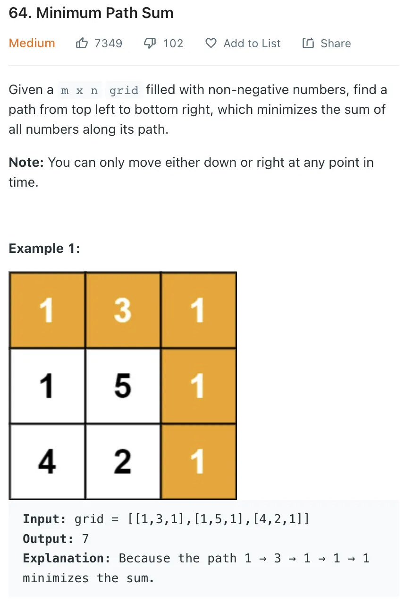
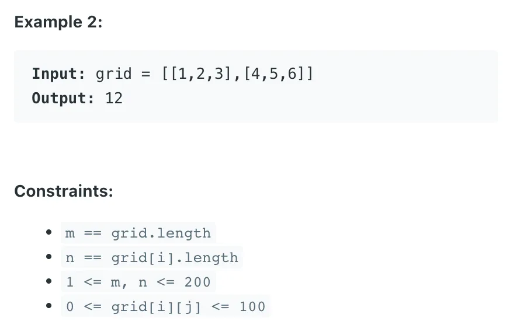

64. Minimum Path Sum
考過的公司：Asked by: Amazon, Google
Question


✍🏽 My Solution
Runtime: 2 ms, faster than 87.51% of Java online submissions for Minimum Path Sum. Memory Usage: 46.6 MB, less than 12.15% of Java online submissions for Minimum Path Sum.
class Solution {
public int minPathSum(int[][] grid) {
int m = grid.length;
int n = grid[0].length;
if (m == 1 && n == 1) return grid[0][0];
int[][] dp = new int[m][n];
for (int i = 0; i < m; ++i) {
for (int j = 0; j < n; ++j) {
if(i == 0 && j == 0) {
dp[i][j] = grid[0][0];
continue;
}
else if (i == 0) {
dp[i][j] = dp[i][j - 1] + grid[i][j];
continue;
}
else if (j == 0) {
dp[i][j] = dp[i - 1][j] + grid[i][j];
continue;
} else {
dp[i][j] = Math.min(dp[i-1][j], dp[i][j-1]) + grid[i][j];
}
}
}
/*
for(int[] arr : dp){
for(int i : arr){
System.out.print(i);
}
System.out.println();
}
*/
return dp[m-1][n-1];
}
}
🧠 Thought Process
-
Why did I choose this particular implementation?
- 狀態：
int dp[n][w+1]紀錄每階段可達重量對應的最少物品個數。
dp[i][j]=true表示第
i個物品決策完之後，背包重量為j，對應的最少物品個數。
狀態轉移方程： (i, j)這個狀態只有可能從(i-1, j)和(i, j-1)兩個狀態轉移過來 dp[i][j] = Math.min(dp[i-1][j], dp[i][j-1] + grid[i][j])
Solution #2 [不建立額外DP數組]
- 狀態：
int dp[n][w+1]紀錄每階段可達重量對應的最少物品個數。
dp[i][j]=true表示第
class Solution {
public int minPathSum(int[][] grid) {
for(int i = 0; i < grid.length; i++) {
for(int j = 0; j < grid[0].length; j++) {
if(i == 0 && j == 0) continue;
else if(i == 0) grid[i][j] = grid[i][j - 1] + grid[i][j];
else if(j == 0) grid[i][j] = grid[i - 1][j] + grid[i][j];
else grid[i][j] = Math.min(grid[i - 1][j], grid[i][j - 1]) + grid[i][j];
}
}
return grid[grid.length - 1][grid[0].length - 1];
}
}
Solution #1 [王爭-二維DP]
Runtime: 3 ms, faster than 53.47% of Java online submissions for Minimum Path Sum.
Memory Usage: 46.4 MB, less than 24.13% of Java online submissions for Minimum Path Sum.
class Solution {
public int minPathSum(int[][] grid) {
int m = grid.length;
int n = grid[0].length;
if (m == 1 && n == 1) return grid[0][0];
int[][] dp = new int[m][n];
int path = 0;
for (int i = 0; i < m; i++) {
path += grid[i][0];
dp[i][0] = path;
}
path = 0;
for (int j = 0; j < n; j++) {
path += grid[0][j];
dp[0][j] = path;
}
for (int i = 1; i < m; ++i) {
for (int j = 1; j < n; ++j) {
dp[i][j] = Math.min(dp[i-1][j], dp[i][j-1]) + grid[i][j];
}
}
return dp[m-1][n-1];
}
}